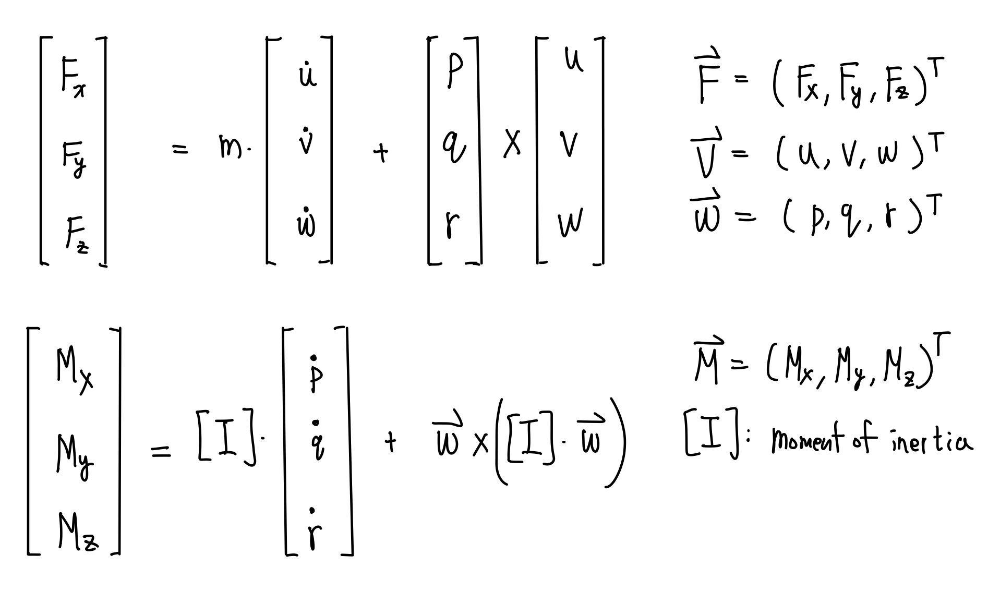
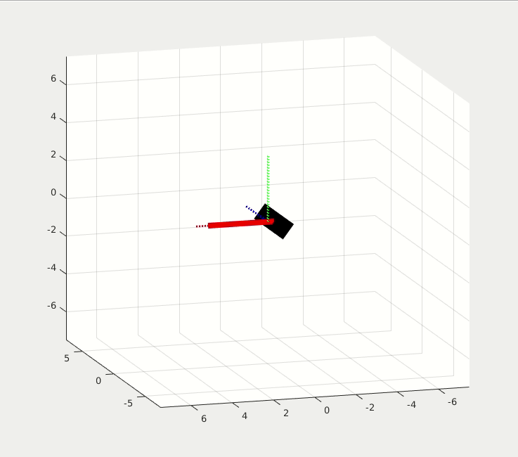
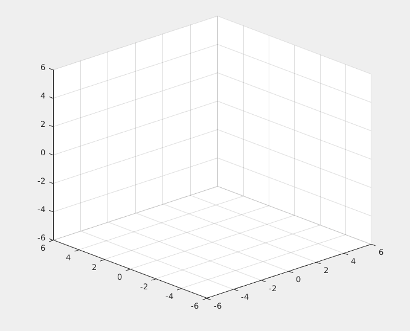
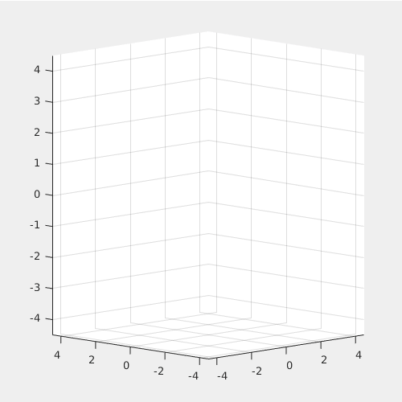
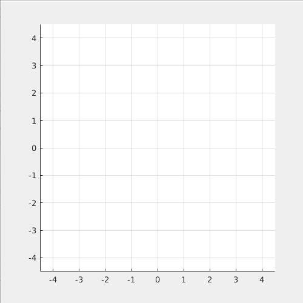
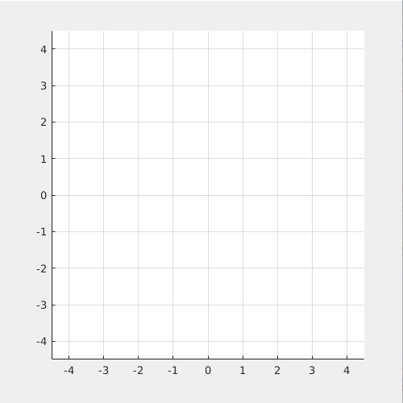
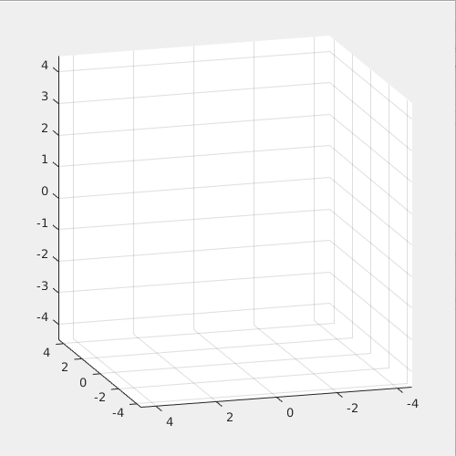
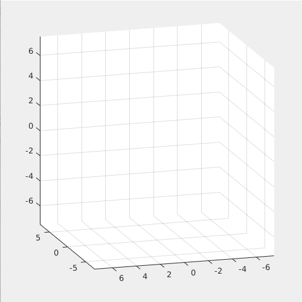

6dof Dynamics, Examples, and Dzhanibekov effect
Introduction
This page explains the 6-dof equation of motion. Two simple example problems are given to demonstrate the analysis and calculation. Then an interesting, real-world Dzhanibekov Effect (or Intermediate axis theorem) is simulated by using the same 6-dof dynamic model.
The purpose of this page is to let readers understand the fundamentals of the 6-dof dynamics equations of motion.
The 6-dof dynamics equations of motions are the force equation and the torque equation at the center of mass, all described in the body-fixed frame as follows:

Demo
The motion of any arbitrary rigid body is governed by the above equations.
Now that's look at an interesting rotation behavior first discoverd by the Russian cosmonaut in space. The behavior is shown by the gif recorded from youtube videos

This effect is called Dzhanibekov Effect, Tennis Racket Theorem, or Intermediate Axis Theorem. The rotating T-shaped body will flip regularly. It is interesting because it is counter-intuitive. However, eventually, I want to show that this effect is governed by Netwon's Law and can be simulated by the same 6-dof model I've used for previous quadcopter control project. And this is the simulation result.

At first, the rigid body is stationary. At t = 3 sec, a torque impulse is applied on Y-axis. It first starts to rotate around the Y-axis, then it flips regularly while it is spinning. The gravity in this simulation is set to 10e-5 for micro gravity environment.
Youtube Link of the Dzhanibekov Effect
6dof Equations of Motion
The key to understand the 6dof equations of motion of a rigid body is the time derivative of a vector in rotating frame. A vector contains magnitude and direction. So the time derivative of a vector in rotating frame includes the change in its magnitude and the change in its direction. Normally, we describe the states (velocity, angular rate, and so on) in body-fixed frame, which is in general a rotating and translating frame. The first (u_dot,v_dot,w_dot) term in the force equation is the change in magnitude term, and the second (p,q,r)x(u,v,w) is the change in direction term. Same concept for the torque equation. For more details please refer to my hand-written pdf (page 1-2) or the following link.
Derivation of time derivatie of a vector in rotating frame
Example 1: Spacecraft in circular motion
Problem: a spacecraft is to move in a circular motion with constant radius and constant angular acceleration rate. The spacecraft should also direct its heading toward the moving direction. What is the force and torque required? (Zero gravity).
Using the 6-dof equations of motion, we find that:
- A constant Torqe: M_z = Izz * angular acceleration rate, is required.
- A constant Force tangential to its motion, F_xb = m * R * angular acceleration rate, is required.
- A varying centrifugal force, F_yb = m * R * angulr rate, is required

The red arrow is the constant M_z Torque; the blue arrow is the constant F_xb force; the green arrow is the varying centrifugal F_yb force.
Note that the motion is different from a point mass by the torque equation. For a given M_z torque, the motion will be different for different spacecraft configuration due to their differnt moment of inertia.
The detail of the analysis and the process of solving this problem is provided in my hand-written pdf (page 2-3).
Example 2: Quadcopter in circular motion
Problem: a quadcopter is to move in a circular motion with constant radius and constant angular rate. The quadcopter should also direct its heading toward the moving direction. What is the force and torque required? And what is the attitude of the quadcopter? (normal gravity).
Note that we use the same 6-dof equations of motion. The only difference between example 1 and example 2 is the control inputs, which are the force and torque that can be generated by each vehicle. Spacecraft is assumed to generate force and torque in each xb, yb, zb directions. However a quadcopter is limited to generate a force in its zb direction, and torque in xb, yb, zb directions.
Using the 6-dof equations of motion, we find that:
- The quadcopter must have a constant roll angle: arctan(R * anguler rate^2 / g), in order to provide the centrifugal force for circular motion
- A constant thrust: m * g / cos(roll), is required
- A constant Torque around xb axis, M_x = angulr rate^2 * sin(roll) * cos(roll) * (Izz-Iyy), is required in order to maintain the required constat roll angle.

The red arrow is the constant M_x Torque; the light blue arrow is the constant Thrust, or F_zb force. For given radius, the higher angulr rate requires a higher roll angle.
The following simulation shows what happened if the torque, M_x is not provided: (Left: side view. Right: top view)

You can see that the quadcopter "drift away" from the circular path because it cannot maintain the required roll angle.
The detail of the analysis and the process of solving this problem is provided in my hand-written pdf (page 4-5).
Dzhanibekov Effect
Lastly, we are prepared to understand the counter-intuitive Dzhanibekov Effect. The provided youtube video used the "tricky fictitous force" to explain it. But actually, we can understandd it by using the example 2.
Note that in the quadcopter example, we found the required force, torque, and attitude for it to go in a circular motion around the Z axis. The force is provided by the thrust and the torque is provided by the motors' torque. Once we remove the provided torque, the quadcopter would rotate around its xb axis, and eventually drift away the circular path.
And this is what happened for the T-shaped rigid body in space since there is no torque acting on it! Under certain condition, the rigid body will flip around an axis (the axis that isn't the main rotating axis) while it is rotating around a main axis. In brief, the Dzhanibekov Effect occurs when 1) Ixx < Iyy < Izz. 2) The main rotating axis is close to Iyy with a small angle deviation.
The following two simulations show that Dzhanibekov Effect will not occur when 1. Left) Iyy is the largest and 2. Right) the main rotating axis is perfectly aligned with the yb axis.

This effect is so interesting because it seems to violate the Newton's Law, yet it is Newton's Law that governs this effect!
The detail of the analysis, the solving process, and the condition of this problem is provided in my hand-written pdf (page 5-6)
Resource
If you want to get the MATLAB projects used on this page, please contact me via my email: j2855001@gmail.com
Please download the free pdf file that includes the complete analysis and calculation of each examples.Hand Written PDf file
If you appreciate my work and want to support me, you can sponsor me via my paypal link:
my paypal link. (press send to sponsor me)
Or you can contact me via my WeChat ID: Jordan8871, if you don't have access to
paypal.
Thank you. I really appreciate your support.